Publications
Abstract:
Equitable access to the built environment requires assistive mobility devices that can be developed and assessed systematically before clinical deployment. A research platform for a hybrid, multi-leg wheelchair mechanism is introduced to advance this goal. The contribution comprises a proof-of-concept computer-aided design (CAD) model relying on international organization for standardization (ISO) standards, a corresponding unified robot description format (URDF) model suitable for physics-based simulators, and a set of standardized geometric test layouts inspired by ISO 7176-5. The mechanism is conceived to operate in rolling and leg-assisted modes so that everyday obstacles—such as curbs, stair steps, gaps, snow, sand, and uneven outdoor surfaces—can be addressed within a unified framework. The standardized layouts (including corridor width, doorway entry depth, right-angle turns, and reversing width) provide a common context for assessing maneuverability and minimum turning radii while enabling fair comparison of future controllers. Representative simulations confirm successful model import and commanded motion across intended ranges without prescribing specific control strategies. By lowering the barrier to rigorous, reproducible testing in safe virtual settings, the platform is positioned to accelerate research toward more capable mobility aids, with the potential to enhance independence, dignity, and participation for people with disabilities.
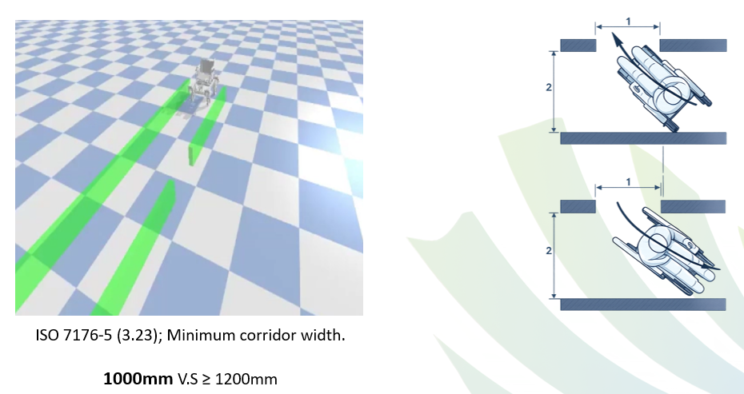
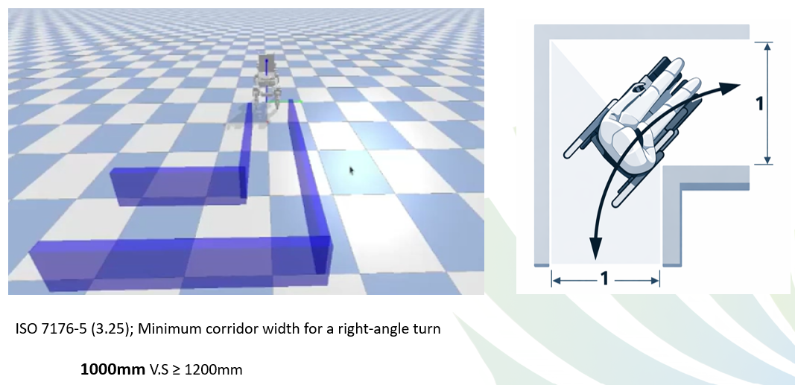
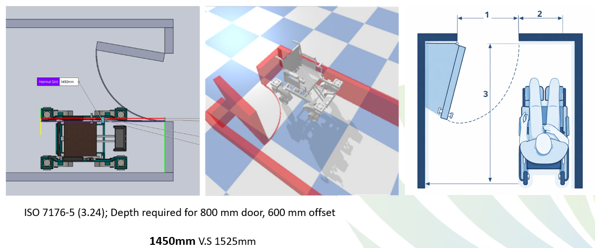
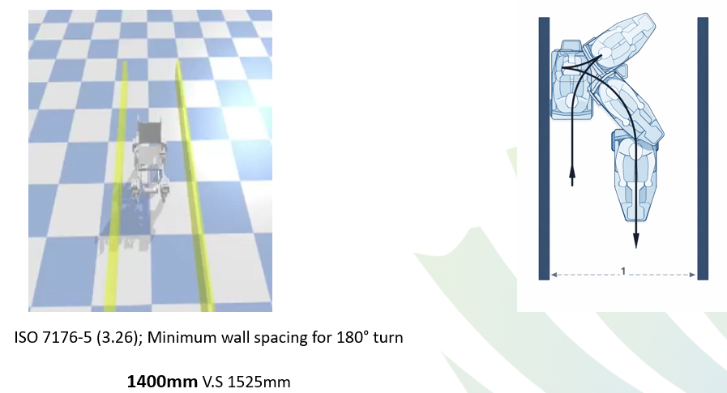
Abstract:
Overall, in any system, the proportional term, integral term, and derivative term combined to produce a fast response time, less overshoot, no oscillations, increased stability, and no steady-state errors. Eliminating the steady state errors connected to typical PID systems is crucial for achieving stability. To plot the transfer function's responses with various integrator gains for auto tuning, a MATLAB M-file was developed. Auto tuning techniques were then applied to PID systems to eliminate steady state defects. this paper analyzes and tests the improvement of PID controller over the regular P-controller taking a hand follower robot as a system example using methods with simulation and numerical analysis study.
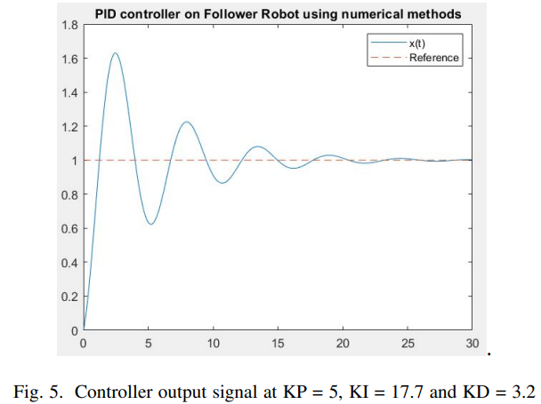
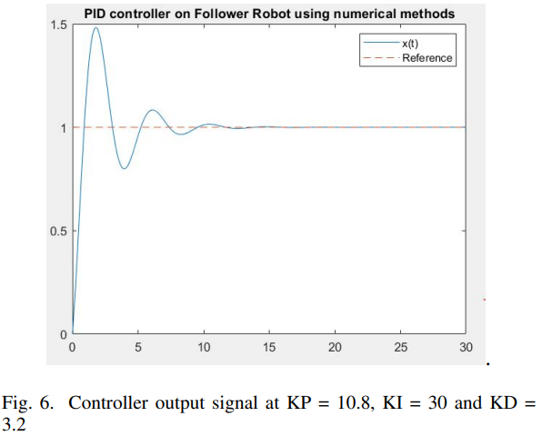
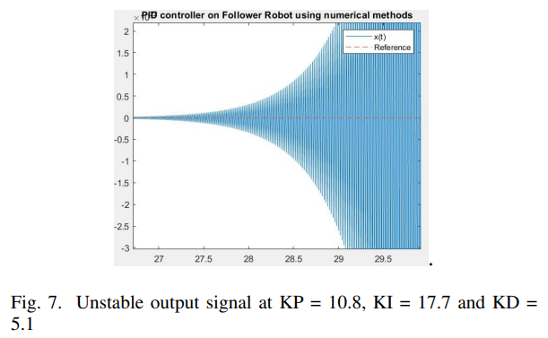
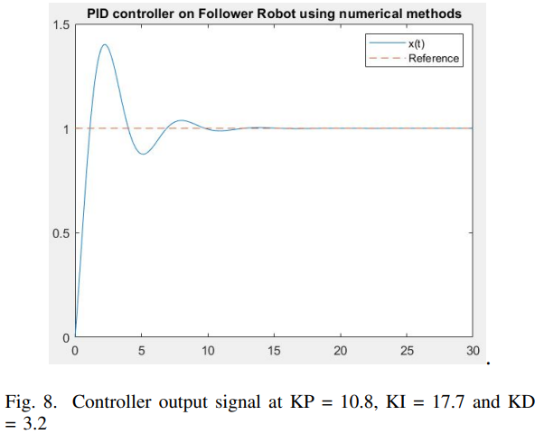
Abstract:
A two-wheeled self-balancing robot (TWSBR) is non-linear and unstable system. This study compares the performance of model-based and data-based control strategies for TWSBRs, with an explicit practical educational approach. Model-based control (MBC) algorithms such as Lead-Lag and PID control require a proficient dynamic modeling and mathematical manipulation to drive the linearized equations of motions and develop the appropriate controller. On the other side, data-based control (DBC) methods, like fuzzy control, provide a simpler and quicker approach to designing effective controllers without needing in-depth understanding of the system model. In this paper, the advantages and disadvantages of both MBC and DBC using a TWSBR are illustrated. All controllers were implemented and tested on the OSOYOO self-balancing kit, including an Arduino microcontroller, MPU-6050 sensor, and DC motors. The control law and the user interface are constructed using the LabVIEW-LINX toolkit. A real-time hardware-in-loop experiment validates the results, highlighting controllers that can be implemented on a cost-effective platform.
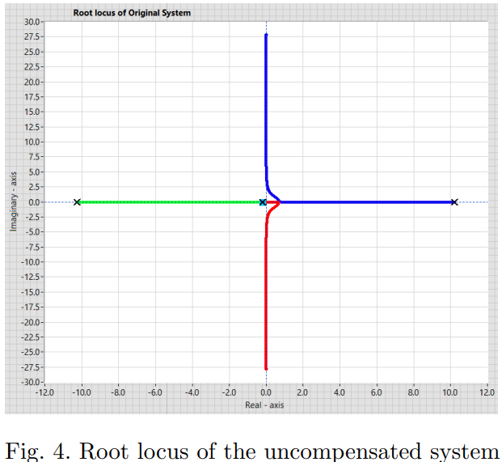
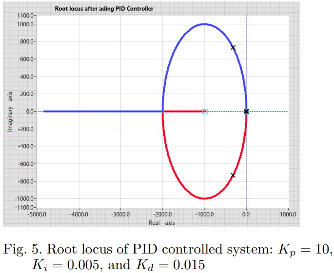
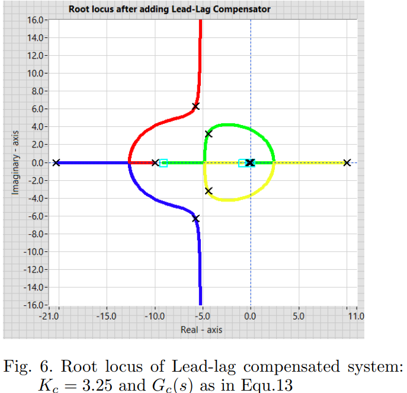